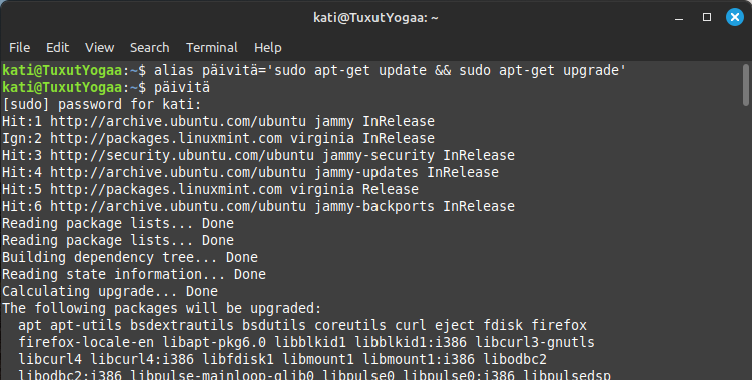
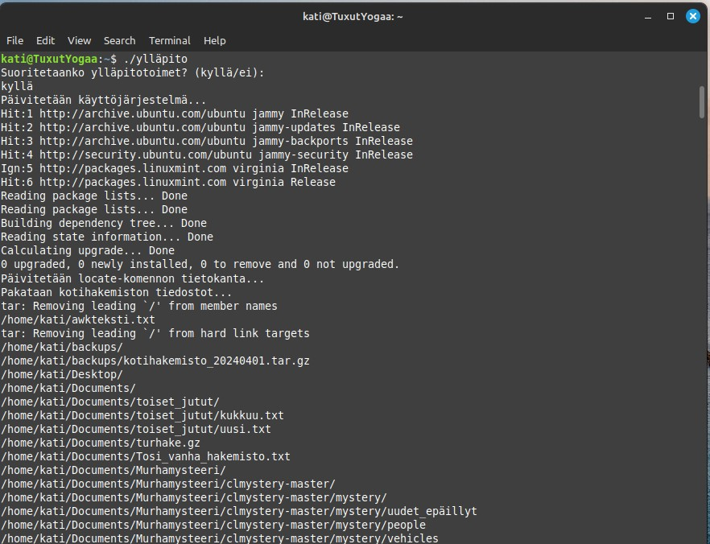

Komentorivikehote näyttää käyttäjänimen ja kellonajan. http://ezprompt.net/ oli helppokäyttöinen työkalu.
Komentorivikehote näyttää tietokoneen nimen sekä komentorivitulkin ja komentorivitulkin version.
Komentorivikehote näyttää tervehdyksen valitsemallani värillä (joita ei ollut montaa).
Tässä loin "backup" aliaksen, joka pakkaa kotihakemistoni alihakemistoineen kansioon backup.zip
Tässä kokeilin alias backup käskyn toimintaa
Tässä loin "poista" aliaksen, joka poistaa haluamani tiedoston, mutta kysyy vielä varmistukden poistosta.
Tässä kokeilin alias "poista" käskyn toimintaa
Tässä loin "juureen" aliaksen, jolla siirryn koko järjestelmän juurihakemistoon. Ja samalla kokeilin sen toimintaa.
Tässä loin "päivitä" aliaksen, jonka tehtävänä on ladata ja tarkistaa järjestelmäpäivitykset. Kysyy pääkäyttäjäoikeuksia.
Tässä kokeilin alias "päivitä" käskyn toimintaa
Tässä loin "päiväkirja" aliaksen, joka avaa päiväkirjan nanona.
Tässä kokeilin alias "päiväkirja" käskyn toimintaa
Tein skriptin, joka kysyy nimen ja iän. Tämän jälkeen se tulostaa tekstin, jossa ottaa molemmat syötteet huomioon.
Tein skriptin, joka kysyy käyttäjätunnuksen ja salasanan. Mikäli tunnus on opiskelija ja salasana demo antaa oikeanlaisen tulostuksen. Mikäli jompikumpi on väärin tulostaa "syötit väärän käyttäjätunnuksen tai salasanan."
Tein skriptin ylläpitoa varten. Ajettaessa kysyy "suoritetaanko ylläpitotehtävät" vastauksesta riippuen, joko toteuttaa ne tai jättää toteuttamatta.
Tein skriptin, joka toimii arvauspelinä. Kone arpoo numeron, jota arvuuttelee siihen asti, jolloin arvaaja osuu oikeaan numeroon. Lisäksi ohjelma kertoo arvauksien lukumäärän.